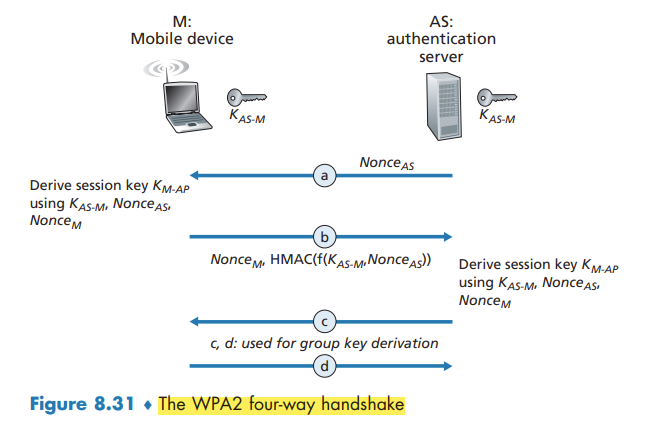
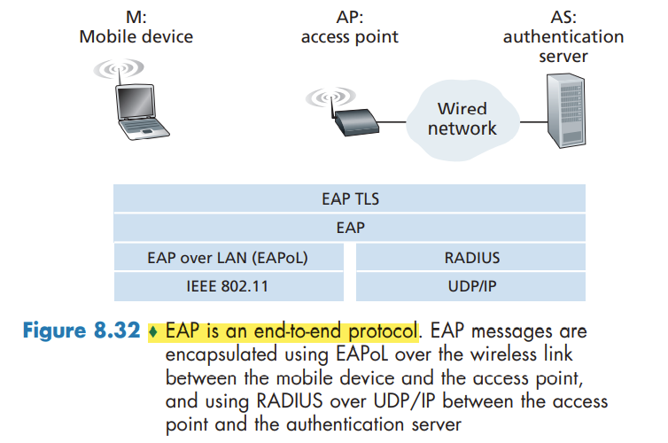

↩️ ttm4100
Securing Wireless LANs and 4G/5G Cellular Networks
Authentication and Key Agreement in 802.11 Wireless LANs
critical security concerns that we’ll want an 802.11 network to handle:
- Mutual authentication. Before a mobile device is allowed to fully attach to an access point, the network will typically want to authenticate the device. Similarly, the mobile device will want to authenticate the network to which it is attaching.
- Encryption. Symmetric key encryption is used in practice, since encryption and decryption must be performed at high speeds.
We can identify four distinct phases to the process of mutual authentication and encryption-key derivation
- Discovery. the AP advertises its presence and the forms of authentication and encryption that can be provided to the mobile device. The mobile device then requests the specific forms of authentication and encryption that it desires
- Mutual authentication and shared symmetric key derivation. the device and the authentication server will use this shared secret along with nonces (to prevent relay attacks) and cryptographic hashing (to ensure message integrity) in authenticating each other.
- Shared symmetric session key distribution.
- Encrypted communication between mobile device and a remote host via the AP.
Mutual Authentication and Shared Symmetric Session Key Derivation
Wired Equivalent Privacy (WEP) contained a number of serious security flaws.
At the heart of WPA is a four-way handshake protocol that performs both mutual authentication and shared symmetric session-key derivation.

802.11 Security Messaging Protocols

Authentication and Key Agreement in 4G/5G Cellular Networks

The 4G Authentication and Key Agreement (AKA) protocol consists of the following steps:
- Authentication request to HSS.
- Authentication response from HSS.
- Authentication response from mobile device.
- Mobile device authentication.
- Data plane and control plane key derivation.